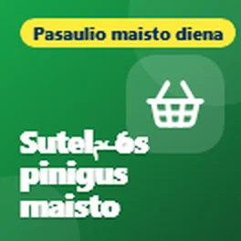

Šis puslapis išverstas automatiškai. Jei kas nors skamba netaip, praneškite man.
Darmowe porady techniczne dla Bridlington i East Riding
Proste porady dotyczące telefonów, komputerów i bezpieczeństwa w internecie. Darmowe, bez żadnych zobowiązań.
Najnowsze wskazówki

Dyspraxia: help for adults and students
It's the last day of Dyspraxia Awareness Week, and I wanted to finish by sharing some support for adults and students, because dyspraxia doesn't stop...

Have a pendant or fall alarm? Check it now
I wanted to share something important for anyone who has a personal alarm, like a pendant or a fall alarm, that works through their home phone line.

Darmowe książki i telewizja, którą możesz słuchać
Dziś jest czwarty dzień Tygodnia Braille'a, a dzisiejsze wskazówki dotyczą książek, radia i telewizji, którą możesz słuchać.
Darmowe narzędzia do obniżenia rachunków za szerokopasmowy internet i telefon
Dziś jest Międzynarodowy Dzień Zwalczania Ubóstwa, więc chciałem podzielić się swoimi darmowymi narzędziami, które mogą pomóc Ci obniżyć koszty szerokopasmowego internetu...

Dyspraksja: technologie do poruszania się
Dziś jest szósty dzień Tygodnia Świadomości Dyspraksji, a dzisiaj chcę podzielić się technologią, która pomaga w poruszaniu się.

Pozwól, aby Twój telefon czytał Ci na głos
Dziś jest trzeci dzień Tygodnia Braille'a, a dzisiaj chcę podzielić się darmowymi sposobami, jak sprawić, że Twój telefon lub komputer czyta rzeczy na głos dla Ciebie.

Dyspraksja: aplikacje do poruszania się
Dziś jest piąty dzień Tygodnia Świadomości Dyspraksji, a dzisiejsze wskazówki dotyczą wszystkiego, co związane z poruszaniem się.

Oszczędzaj pieniądze na żywność za pomocą telefonu
Šiandien yra pasaulio maisto diena, todėl norėjau pasidalinti nemokamais programėlėmis, kurios gali padėti jums sutaupyti pinigus maisto ir užbaigti gamybos dalį.

Nemokamos programėlės, kurios gali padėti jums išsaugoti gyvenimą
Šiandien yra Širdies Restartos diena, todėl norėjau pasidalinti nemokamais programėlėmis ir svetainėmis, kurios gali padėti jums suaugti CPR ir būti pasiruočiu, jei įvyks kažkam nors širdies sustojimas.

Perėjimas su matumai praradusi
Šiandien yra Nacionalios Brailio savaitės diena, ir šiandien yra šviesos kepalo saugos diena, todėl norėjau pasidalinti nemokamais programėlėmis, kurios padeda žmonėms, kuriems yra matumai praradusi...

Dyspraksija: įrankiai, kurie padara skaityti lengvai
Šiandien yra Dyspraksijos sąmoningumo savaitės ketvirtadienis, ir šiandien norėjau pasidalinti nemokamais įrankiais, kurie padara skaityti lengvai.
Gauta tekstas apie neįvestą siuntimą?
Norėjau pasidalinti perspėjimu apie fikcijos siuntimo tekstus, nes jie yra vienas iš dažniausių šaltinių šaltinių šiuo metu.

Dyspraksija: kai rašymas yra trudras
Šiandien yra Dyspraksijos sąmoningumo savaitės trečkinis diena, ir šiandienios patarimai yra visiems, kurie trudri rašyti.

Truduri skaityti savo telefoną?
Ši savaitė yra Nacionalios Brailio savaitės, todėl norėjau pasidalinti nemokamais funkcijomis jūsų telefonu, kurios gali padaryti didelį skirtumą, jei jūsų matumai nėra tai, kas...

Masite il tuo vecchio telefono o laptop in un cassetto?
Oggi è la Giornata Mondiale dell'E-Waste, un buon promemoria su tutti quei vecchi telefoni, tablet e laptop che sono in un cassetto. La maggior parte di noi ha...

Dispraxia: strumenti per rimanere organizzati
È il secondo giorno della Settimana di Consapevolezza della Dispraxia, e oggi volevo condividere alcuni strumenti gratuiti che aiutano a rimanere organizzati.

Il tuo telefono può aiutarti in caso di emergenza
Oggi è la Giornata Internazionale della Riduzione del Rischio di Disastri, quindi volevo condividere alcune funzionalità del tuo telefono che potrebbero davvero aiutarti in caso di emergenza....

Mani stanche? Lascia che il tuo telefono e laptop facciano il lavoro
Oggi è la Giornata Mondiale dell'Artrite, quindi volevo condividere alcune funzionalità del tuo telefono e laptop che possono rendere la vita molto più facile se hai dolori, rigidità o...

Tecnologia che aiuta i bambini a imparare, non a fare affidamento su di essa
Questa settimana è la Settimana di Consapevolezza della Dispraxia, quindi volevo condividere alcuni modi in cui la tecnologia può aiutare i bambini con la dispraxia. L'idea è usare la tecnologia per aiutarli...

Fai lavorare il tuo telefono per il tuo benessere
La Giornata Mondiale della Salute Mentale è stata il 10 ottobre, quindi volevo condividere alcune cose semplici che il tuo telefono può già fare per aiutarti a sentirti un po' più calmo e più...
Qualunque cosa ami, c'è una comunità per questo
Volevo condividere qualcosa che molte persone non sanno che esiste.
Reklamai pojawiają się znikąd?
Kontynuując mój wpis o przerażających reklamach wyświetlanych znikąd, oto co zrobić, jeśli reklamy nadal pojawiają się na Twoim telefonie Android, nawet gdy nie używasz żadnej aplikacji.
Przerażająca reklama na telefonie? To tylko reklama
Chciałem podzielić się wskazówką dotyczącą tych przerażających reklam, które czasami pojawiają się na telefonach.

Czy Twój nawigacja satelitarna jest aktualna?
Oto szybka wskazówka dla każdego, kto nadal używa nawigacji satelitarnej w samochodzie.
Wybór do nagrody Time2Volunteer Awards 2026
Chciałem podzielić się trochę wiadomości. Ostatnio zostałem zakwalifikowany do nagrody Time2Volunteer Awards 2026 za wolontariat, który wykonuję z lokalnym wsparciem technicznym...
Proste fakty, aby utrzymać swój komputer w bezpieczeństwie
Chciałem podzielić się kilkoma wskazówkami dotyczącymi utrzymania komputera w bezpieczeństwie, ponieważ wiele osób kończy na tym, że płaci za antywirusy, których wcale nie potrzebuje.
Co to jest kod QR?
Tiesi, norėjau pasidalinti greitas patara. apie QR kodus.

Patikrinkite savo šildymo ir karšto vandens laiko laikmenis
Su atvykančiu šarčiau, dabar yra geras laikas patikrinti savo šildymo ir karšto vandens laiko laikmenis.

Patestinkite šildymą prieš šarvas
Su atvykančiu šarvas, dabar yra geras laikas patestinti savo šildymą, ypač jei jį nenaudote daug šį metą.
Peržiūrėkite patarimus pagal temą
- Šaltinis ir saugumas (4)
- Health and wellbeing (14)
- Pinigai (2)
- Internet ir susijimas (2)
- Naujienos (1)
- Everyday tech (6)
Co ludzie mówią
Labai ačiū, pone
Taip, tikrai naudinga, ačiū. Pasidalinsiu su visais, kuriems, mano manymu, jūsų patarimai pravers 😃
Naudinga, ačiū
Dar daugiau apie mane ir šiuos patarimus
Gaukite naujus patarimus el. paštu
Trumpas laiškas, kai paskelbiu naują patarimą. Nemokamai, atsisakyti galite bet kada.
Gausite patvirtinimo laišką. Laiškus siunčia follow.it, ir kiekviename yra nuoroda atsisakyti prenumeratos.